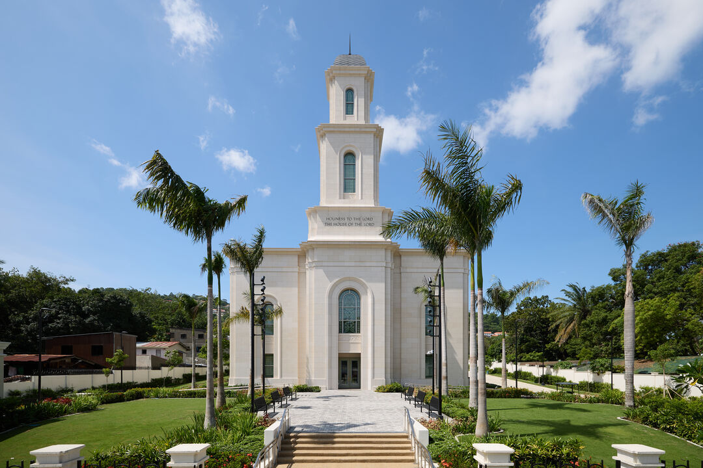

Philippines, Davao Temple

About the Temple
The Davao temple is the fifth temple built in the southern part of the Philippines.
It was dedicated on May 3, 2026: Dedicatory prayer
Visiting information
- Location: Ma-a Road and Anahaw Road, Barangay Ma-a, Davao City, Philippines
- Hours: Check ordinance schedule
- Phone: (+63) 82-333-1010
- Housing: Avalable